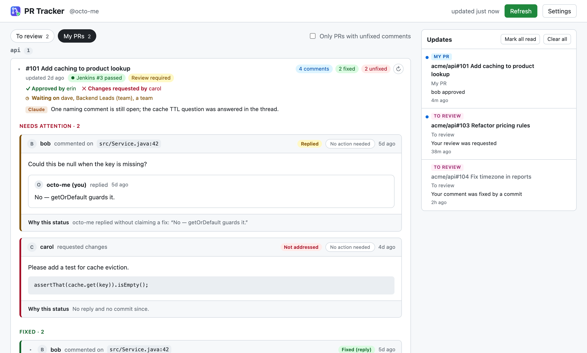

One tab with your open pull requests and the ones waiting on your review, plus every comment from a real person (bots left out) and whether it's been fixed. You get a desktop alert when something changes.
The zip sits next to this page. To share, send the whole folder (this page, screenshot.png and the zip) over Teams or a shared drive.

PRs where your review is requested (the toolbar badge counts these), plus open PRs you've already reviewed, so you can see whether your comments were acted on.
Your open PRs. Each one either says "No human comments" or shows how many comments are fixed and how many aren't.
Both tabs are grouped by service. PRs with no activity for over a week collapse into a Stale group at the bottom.
Author, file and line, the text, a link to it on GitHub, and a status based on what happened next.
About three minutes. It isn't on the Chrome Web Store, so you load it as an unpacked extension.
Chrome loads the extension straight from this folder on every launch, so don't leave it in Downloads. For example:
~/chrome-extensions/pr-trackerPaste this into the address bar (Chrome won't open it from a link). Then turn on the Developer mode switch in the top right.
chrome://extensionsPick the folder that contains manifest.json. A "PR Tracker" card appears.
Click the puzzle-piece icon next to the address bar, then the pin next to PR Tracker. The badge on it shows how many PRs are waiting for your review.
Open the link below. It pre-fills the name, Resource owner = gdncomm, and read-only access to Pull requests and Contents. You still need to pick the repository access yourself:
Create a fine-grained token for gdncomm ↗
If gdncomm doesn't appear under Resource owner, sign in to the org's SSO on github.com first, then reload the page.
If the org requires approval for fine-grained tokens, the new token shows as pending until a gdncomm admin approves it, and the dashboard stays empty until then. You don't need the "Configure SSO" step used for classic tokens.
Click the toolbar icon. Settings opens the first time. Paste the token (it starts with github_pat_) and click Save.
Only gdncomm repos appear. A fine-grained token covers a single owner, so PRs in personal or other orgs' repos aren't shown. That's intended.
Your token stays on your computer. It's saved in this Chrome profile's extension storage and sent only to api.github.com. There's no server in between. The extension only reads from GitHub. It never comments, approves or pushes.
Each refresh (every 15 minutes by default, or when you click Refresh) is compared with the previous one. You get a desktop alert for:
Clicking an alert opens that comment on GitHub. If more than four things change at once, you get one summary instead. You can turn alerts off or change the refresh interval in Settings.
On macOS, allow Chrome to show notifications first: System Settings → Notifications → Google Chrome → Allow notifications. Without this, alerts silently don't appear.
Download the new zip and unzip it over the same folder, replacing the old files. Then click the reload arrow on the PR Tracker card at chrome://extensions. Keeping the same folder keeps your token and settings. A new folder counts as a new extension and starts empty.
Check these in order on your fine-grained tokens:
Fix it on the token page (you don't need a new token), then click Refresh.
You're using a classic token (ghp_…) that isn't authorized for SSO. Either switch to a fine-grained token as described above, or open the classic token → Configure SSO → Authorize for gdncomm.
The token expired or was deleted. Open it on GitHub and click Regenerate token (it keeps the same settings), then paste the new value into Settings.
This is expected for anything loaded unpacked. Click away or close it. The extension keeps working.
Check these three things: the macOS setting above; "Desktop notifications for updates" is ticked in Settings; Chrome is running (checks only happen while it's open).
Also, the first fetch after installing never sends alerts. That's on purpose, so you aren't flooded with everything that already exists.
Statuses are a best guess. For the tracker to count it as fixed, resolve the thread on GitHub or reply with something like "Done in abc1234". Replies in Indonesian (sudah, diperbaiki) count too.
Approvals and clean AI reviews ("No blocking issues", "flagging as solid for a human reviewer") are recognised automatically as No action needed. For anything it misses, click No action needed on the comment. Click Undo to reverse it.
Some CI accounts are regular user accounts. Add their logins under Extra bot logins in Settings.
| Permission | Used for |
|---|---|
storage | Your token, settings and the last fetched list |
alarms | Refreshing in the background |
notifications | Desktop alerts for updates |
api.github.com | The one read-only GraphQL query that fetches your PRs |
It can't see your tabs, browsing history, or any other website.